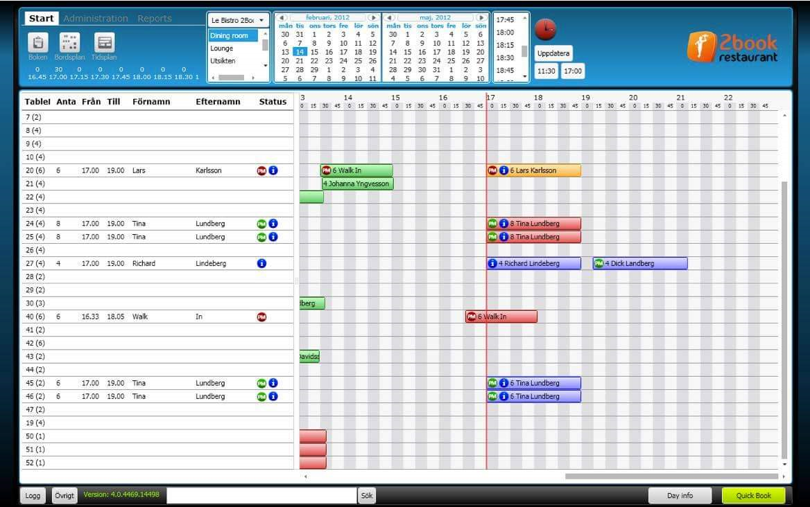
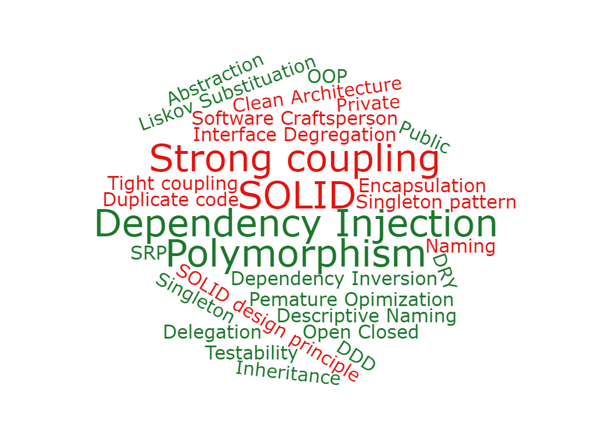
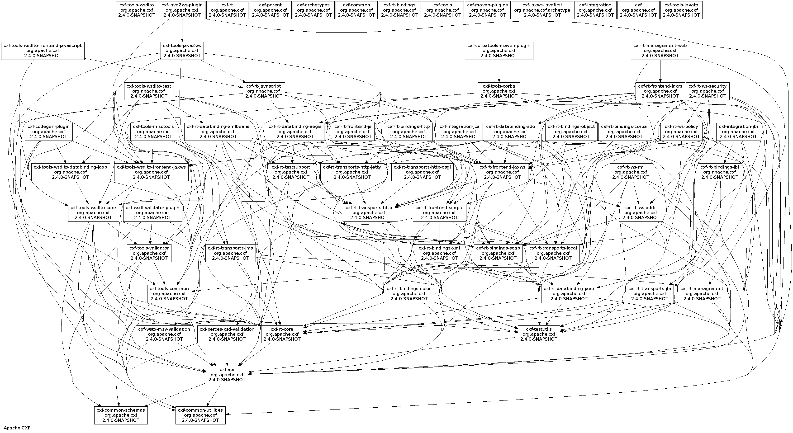

Why I went out of my comfort zone



But why?
- Machine code?
- Assembler
- Procedural
- Functional
- Allan Kay OO
- C derivate OO
- Functional message passing
- HTTP request parsed and routed to controller method with input variable
- Validate input with validator service
- Authenticate input with authentication service
- Convert input to Internal/Domain object
- Call invoiceService with internal object
- Invoice service calls Invoice Repository
- Invoice repository prepares SQL statement of some kind, most likeley some ORM
- Execute the SQL statement on a SQL server and wait for response
- Convert the SQL response from a db object to Internal/Domain object and return to invoice service
- Invoice service responds to controller
- Controller converts to DTO object
- Magic hooked upp things converts dto object to JSON and returns the response to the caller
HTTPRequest
|> ParseInput
|> ValidateAccess
|> GetInvoiceFromDB
|> SerializeResponse
|> HTTPResponse
HTTPRequest
|> ParseInput
|> onSuccess ValidateAccess
|> onSuccess GetInvoiceFromDB
|> switch
| onSuccess -> SerializeResponse
| onError -> MakeAnErrorResponse
|> HTTPResponse
public class baseSucessError {}
public class Sucess : baseError
type Result =
| Success of T
| Error of E
- input -> Result<InvoiceRequest,InvoiceError>
HTTP request -> HTTP Response
printf "Hello world"
[<EntryPoint>]
let main argv =
printfn "Hello World"
0 // return an integer exit code
using System;
namespace ConsoleApp1
{
class Program
{
static void Main(string[] args)
{
Console.WriteLine("Hello World!");
}
}
}
let authRoutes principalStore (resolver: Resolver): HttpHandler list = [
POST >=> route "/v1/auth/start" >=> resolver.toWebPart Auth.Views.start
POST >=> route "/v1/auth/status" >=> resolver.toWebPart Auth.Views.status
POST >=> route "/v1/auth/verify" >=> resolver.toWebPart (Auth.Views.verify principalStore)
POST >=> route "/v1/auth/cancel" >=> resolver.toWebPart Auth.Views.cancel
POST >=> route "/v1/auth/refresh" >=> resolver.toWebPart Auth.Views.refresh
]
public class AuthController : Controller
{
[Route("Auth/start")]
public IActionResult Start()
{
return View();
}
[Route("Auth/Status")]
public IActionResult Status()
{
return View();
}
[Route("Auth/Verify")]
public IActionResult Verify()
{
return View();
}
[Route("Auth/Cancel")]
public IActionResult Cancel()
{
return View();
}
[Route("Auth/Cancel")]
public IActionResult Refresh()
{
return View();
}
}